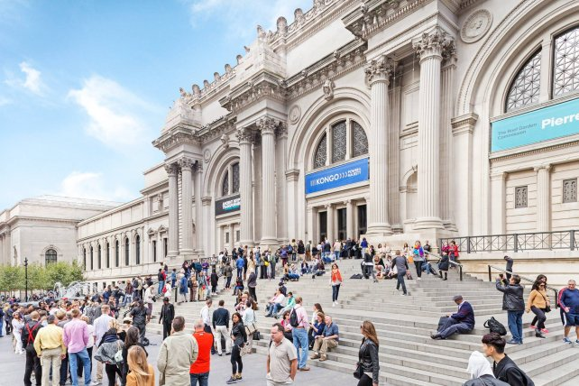

About Me

Hi! My Name is Paulina Gómez and I am a graphic designer in search for digital knowledge. As designers obviously our carrier is focus in the design applied to different things, such as web pages, apps, print out media, digital publicity, etc. Although we saw just the design part of each platform, as graphic designers our studies are centered in print out media. Unfortunately, print out media is slowly dying so out core knowledge has to change as well. Considering as well that at the demand for digital media and tools is growing really fast. So, for now I am in sponge mode to get as much knowledge as I can.
Well, as for fun facts about me. I really love painting though I don´t paint much at the moment. I am an active fan of all the European Royal Houses when talking about general culture. They are my guilty pleasure; I can go from the death of the Romanovs up until the fight of a few months ago between Queen Letizia of Spain and Mother Queen Sofia. Next I would have to say would be Mythology, specially the Greek’s and Roman’s. I really love this topic since is naturally related to paintings, sculptures, and art in general. My favorite museum would definitely be The Met in NYC.